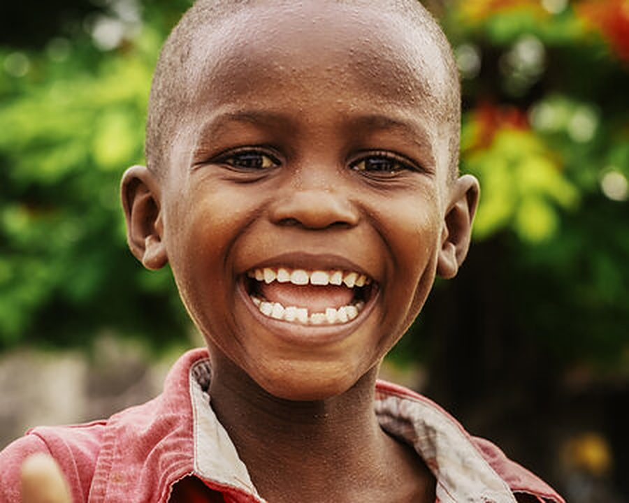
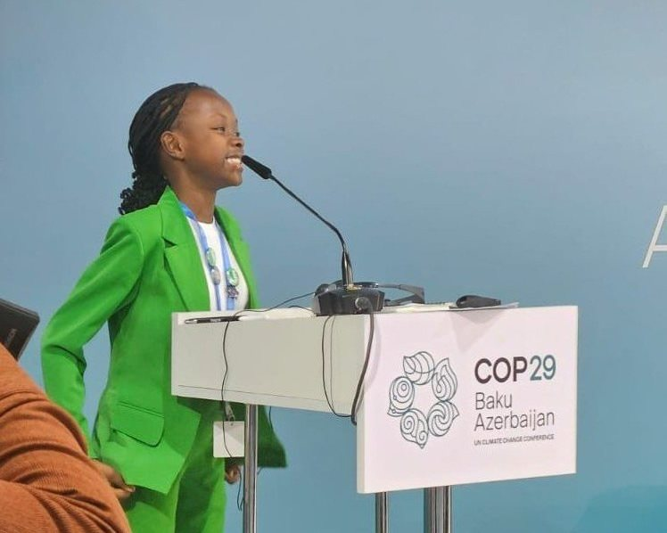

The Youth Advocate Journey
Open to every child under 18 who joins through a partner school or a tree-planting event. Free, with a parent’s or guardian’s consent.
Apply to join- 01ApplyA parent or guardian applies, through a partner school or one of our events.
- 02ConsentThe parent signs a consent form before the first session.
- 03Choose a trackWe meet the child and pick the right track together.
- 04Train and createWeekly sessions over one school term, with mentors and editors.
- 05LaunchA book launch, a broadcast or a seat on a panel, with family invited.
The Storyteller Track
For children who love to write and draw. They write their own environmental story, and Dunia Endelevu acts as their publisher.
- Story workshops to find the idea worth telling
- One-to-one editing and professional illustration
- Printing, publishing and a local book launch
- A place in the annual Dunia Endelevu Climate Anthology
About KSh 50,000 is what it costs to publish a professionally edited and illustrated children’s book in Kenya. We raise it, so families pay nothing.
The Voice Track
For children who would rather speak than write. They join our podcast, Climate Gumzo, as co-hosts or expert guests.
- Public speaking and confidence coaching
- Interviewing skills and how to ask good questions
- Climate facts, explained so you can explain them
- A recorded episode heard by an international audience


The Diplomat Track
For children ready for the main stage, most often teenagers. Training follows the formats of real conferences and climate summits.
- Drafting a speech that is clear, personal and true
- Practising for tough Q&A sessions
- Stage rehearsals and honest feedback
- Introductions to NGOs and sustainability events in Nairobi looking for youth voices
The tracks at a glance
| Detail | Storyteller | Voice | Diplomat |
|---|---|---|---|
| Who can join | Any child under 18 | Any child under 18 | Any child under 18, best for teenagers |
| Best for | Writers and young illustrators | Talkers, questioners, explainers | Confident speakers ready for a stage |
| Length | One school term | One school term | One school term |
| Sessions | Weekly, at school | Weekly, plus one recording day | Weekly, plus event rehearsals |
| You’ll make | Your own published book | A podcast episode | A speech on a real stage |
| Cost to families | Free | Free | Free |
Questions from parents and schools
Who can join?
Any child under 18, through one of our partner schools or a Dunia Endelevu tree-planting event. Schools can apply to become partners.
What does it cost?
Nothing. Partnerships, podcast sponsorships and anthology sales pay for the programme, including books, recordings and travel to events.
What do you need from parents?
The application asks for the child’s name, age and school, and for the parent or guardian’s name, relationship to the child, phone number and email. Before the first session, the parent or guardian signs a consent form.
How long does a track take?
One school term, with a weekly session at school. Book launches, recordings and events are arranged with families in advance.
Where do sessions take place?
At partner schools and public venues, always supervised by vetted adults.
Can a child try more than one track?
Yes. Many storytellers go on to read their work on the podcast, and many voices end up on a panel.